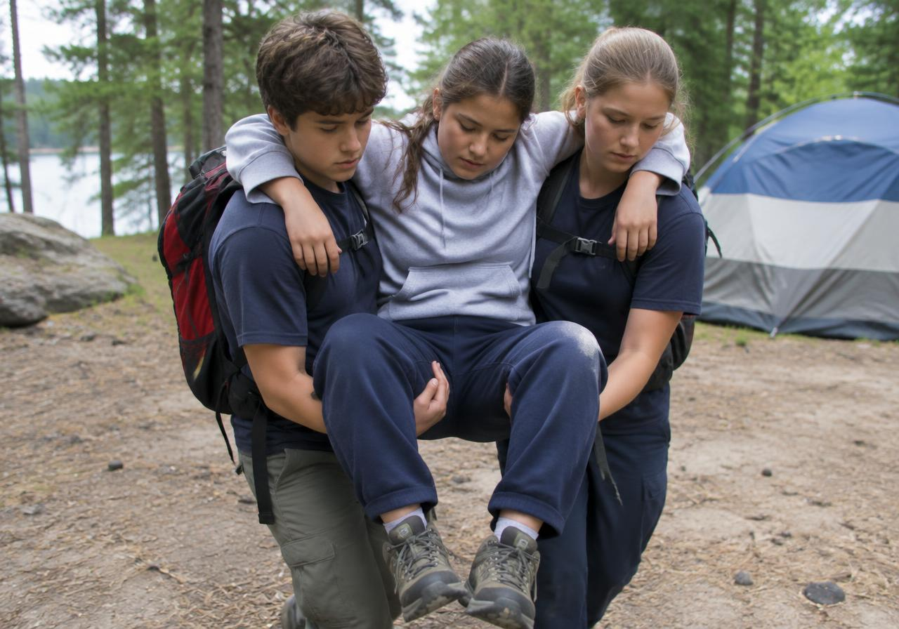
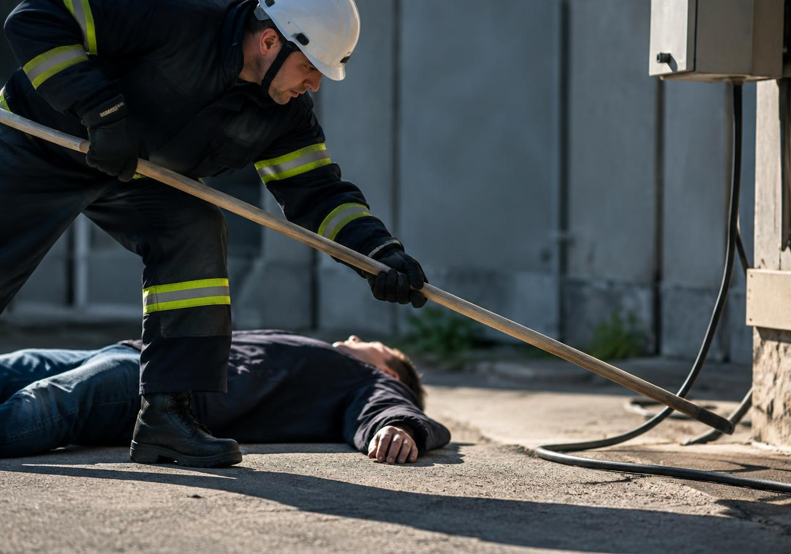
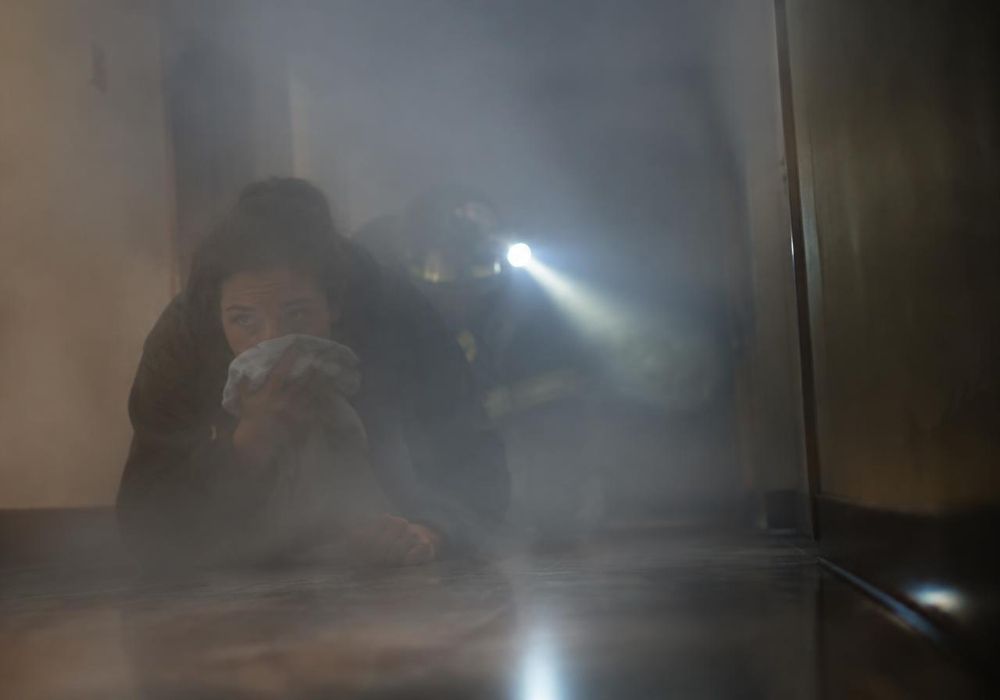
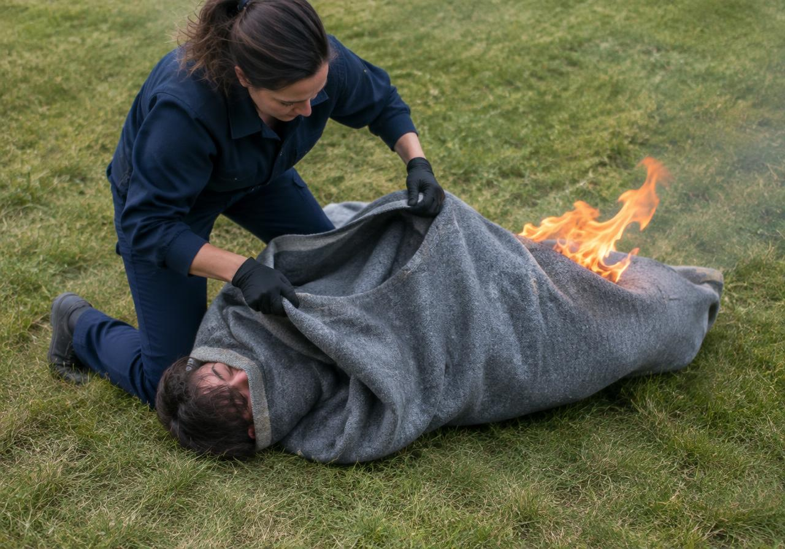
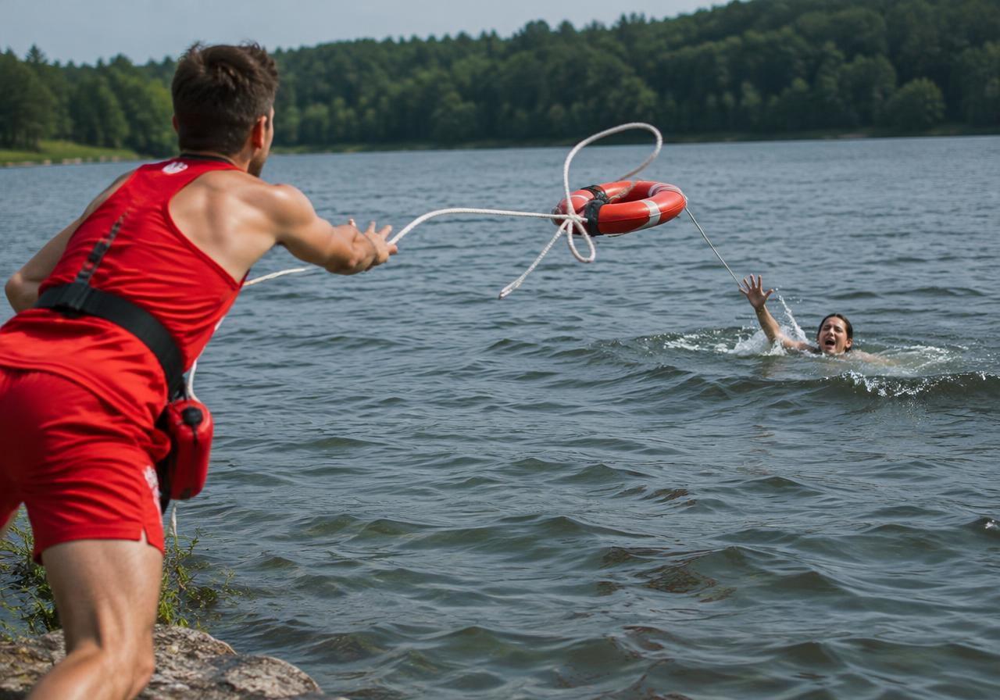
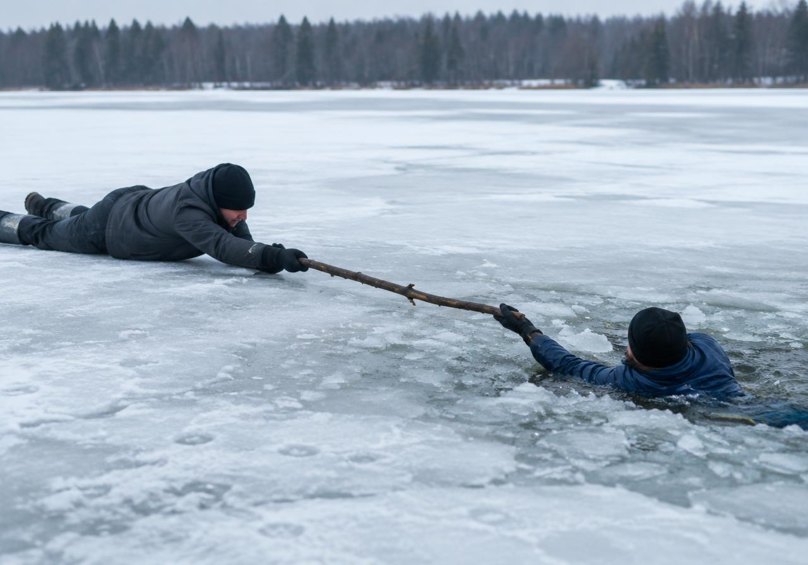
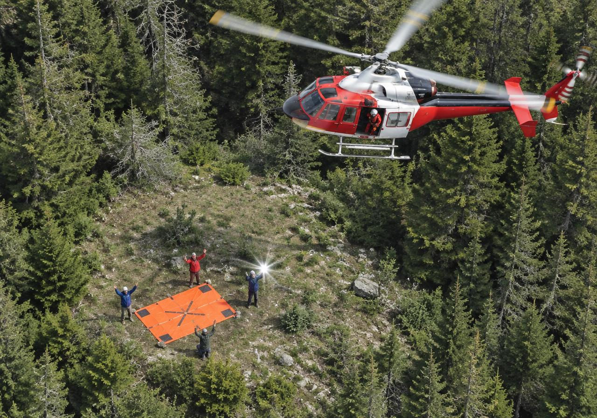
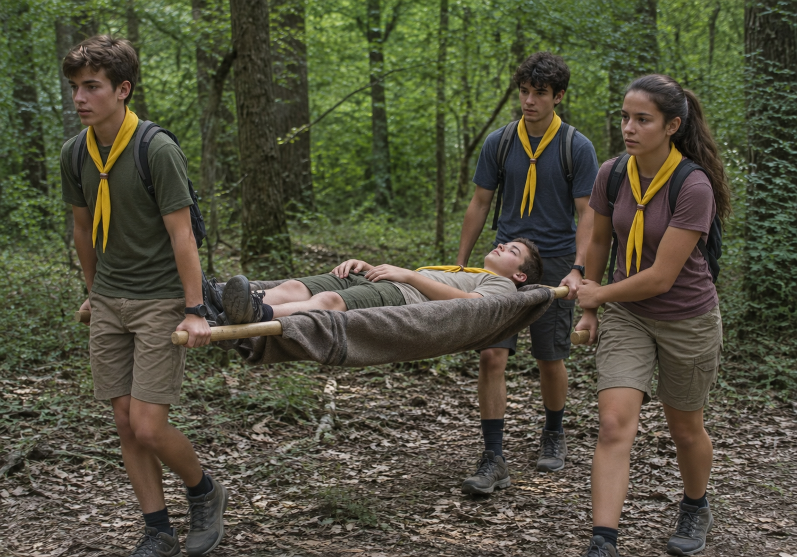
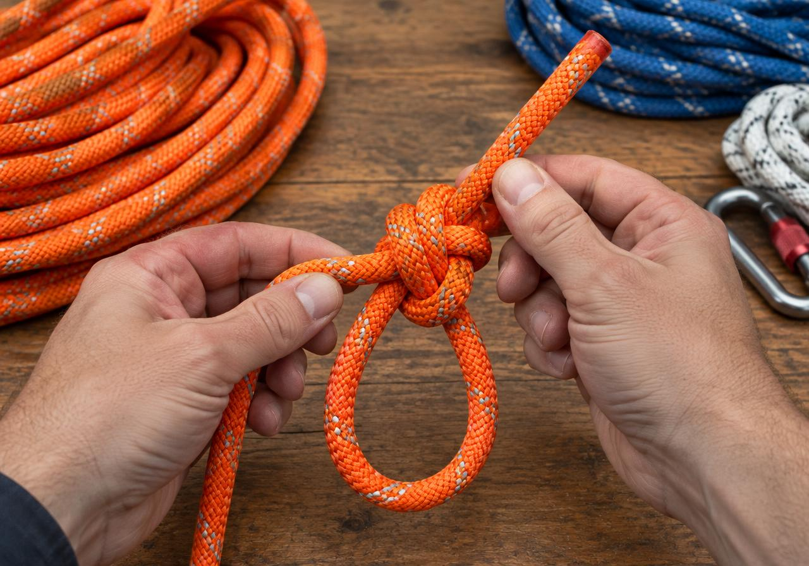
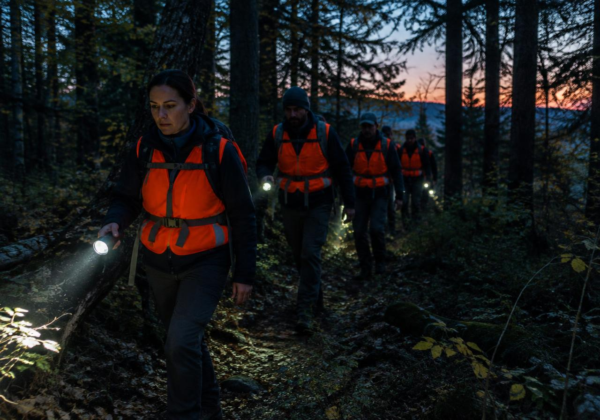

Saber agir com calma e segurança quando cada segundo conta. Um guia completo, com todas as respostas da especialidade dos Desbravadores.
Resgate de emergência é a ação de retirar uma pessoa de uma situação de perigo imediato — fogo, água, fumaça, eletricidade, desabamento, trânsito — levando-a para um local seguro, onde possa receber os primeiros socorros e, depois, atendimento médico especializado.
Ele difere do primeiro socorro: o resgate cuida de tirar a vítima do perigo (ou o perigo da vítima); o primeiro socorro cuida da vítima em si. Um bom socorrista nunca se transforma em uma segunda vítima — por isso, a regra de ouro é sempre a mesma:

Mover alguém de forma errada pode agravar fraturas e lesões na coluna. A remoção de emergência só se justifica quando o perigo do local é maior do que o risco de mexer na vítima. Siga esta sequência:
Pare, observe e pense. Existe fogo, fumaça, gás, corrente elétrica, trânsito, água, risco de desabamento? Quantas vítimas há?
Ligue 193 (Bombeiros) ou 192 (SAMU) — ou mande alguém ligar. Informe o local exato e o que aconteceu.
Use luvas, máscara, desligue a energia, ventile, sinalize a via. Só entre se for seguro. Planeje a rota de saída.
Verifique consciência e respiração. Se o perigo for real e imediato, remova a vítima mantendo cabeça, pescoço e tronco alinhados.
Quando um destes sinais aparece, não há tempo para esperar a equipe especializada: a vítima precisa ser retirada do local agora mesmo.
Chamas próximas, combustível derramado, veículo com vazamento.
Cheiro de gás, cilindros expostos ao calor, produtos químicos.
Ambiente sem oxigênio, monóxido de carbono, vapores químicos.
Estruturas instáveis, deslizamento de terra, árvores prestes a cair.
Vítima na água, enchente, correnteza, gelo quebrando.
Vítima em via com tráfego ou em contato com fio energizado (após cortar a energia).



Correr alimenta o fogo com oxigênio. A regra é PARE, DEITE E ROLE:

Um afogado em pânico pode afundar quem tenta ajudá-lo. Siga a ordem dos bombeiros: Grite → Jogue → Reme → Vá.

Do alto, uma pessoa é um ponto minúsculo. Para ser visto, crie contraste, movimento e brilho.

A aeronave confirma que viu: de dia, balançando as asas; à noite, piscando as luzes verdes de sinalização.
| Técnica | Como fazer | Quando usar |
|---|---|---|
| Cadeirinha (2 ou 4 mãos) pessoa sentada |
Dois socorristas seguram os próprios pulsos e os do companheiro, formando um "assento" quadrado (4 mãos). Na versão de 2 mãos, um braço forma o assento e o outro apoia as costas. A vítima abraça os ombros dos socorristas. | Vítima consciente que consegue se segurar. |
| Cadeira comum pessoa sentada |
A vítima é sentada numa cadeira firme; um socorrista segura o encosto, inclinando-a para trás, e o outro segura as pernas da cadeira. | Descer escadas e corredores estreitos. |
| Pelas extremidades pessoa deitada |
Um socorrista, atrás, segura a vítima pelas axilas, cruzando os braços no peito dela; o outro, entre as pernas, segura atrás dos joelhos. Levantam juntos. | Deslocamentos curtos; vítima sem suspeita de lesão na coluna. |
| Cobertor | Role a vítima em bloco sobre o cobertor, enrole as bordas até junto ao corpo e segure firme em 4 a 6 pessoas, uma de cada lado. | Quando não há maca; terreno irregular. |
| Rede | Prenda as pontas da rede numa vara longa e resistente (bambu, cano). Dois socorristas carregam a vara nos ombros, um em cada extremidade. | Longas distâncias em trilhas e áreas rurais. Muito usado na Amazônia. |
| 3 ou 4 pessoas (em bloco) | Todos ajoelhados do mesmo lado: um apoia cabeça e ombros, outro quadril e costas, outro pernas. Ao comando do líder ("1, 2, 3, já!"), levantam até os joelhos e depois ficam de pé, mantendo o corpo alinhado. | Colocar a vítima em uma maca; suspeita de lesão na coluna. |

Ao carregar: a vítima vai com os pés à frente no plano e subindo escadas, e com a cabeça à frente ao descer — a cabeça sempre fica no lado mais alto.
Um nó bem dado é fácil de fazer, segura sob carga e é fácil de desfazer. Pratique até conseguir de olhos fechados.

Une duas cordas de mesma espessura. "Direita sobre esquerda e por baixo; esquerda sobre direita e por baixo". Também usado em bandagens.
Une cordas de espessuras diferentes. A corda grossa forma uma alça; a fina passa por dentro, contorna e prende sob si mesma. A versão dobrada é mais segura.
Dois nós simples, cada um dado com a ponta de uma corda em volta da outra, que deslizam e se travam. Ideal para cordas finas ou escorregadias.
O "oito seguido" une cordas de escalada com altíssima segurança e é fácil de conferir visualmente.
Encurta uma corda sem cortá-la, ou isola um trecho danificado. Faça duas alças dobrando a corda em "S" e prenda cada ponta com um cote. Só segura quando está tensionado.
O "rei dos nós": forma uma alça fixa que não corre nem aperta. Passe-a sob as axilas da vítima para içá-la ou puxá-la. "O coelho sai da toca, dá a volta na árvore e volta para a toca."
Forma duas alças: uma passa sob as axilas e a outra sob os joelhos, criando um assento. Excelente para içar vítimas inconscientes.
Duas alças ajustáveis ligadas por um nó central: uma no tronco, outra atrás dos joelhos. Usado para descer pessoas de locais altos.
Uma corda mal enrolada se embaraça no ar e cai longe da vítima. A técnica muda conforme o peso:
Sempre grite "CORDA!" antes de lançar, para que a vítima esteja atenta.

João 15:13